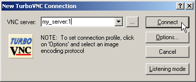
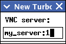
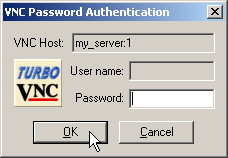
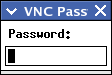

User’s Guide for TurboVNC 1.0
Intended audience: System Administrators, Researchers, and others with knowledge of the Linux or Solaris operating systems and X windows.
This document and all associated illustrations are licensed under the Creative Commons Attribution 2.5 License. Any works which contain material derived from this document must cite The VirtualGL Project as the source of the material and list the current URL for the VirtualGL web site.
The TurboVNC Windows packages include PuTTY, which is released under this license.
TurboVNC is licensed under the GNU General Public License, v2.
TurboVNC is an optimized version of VNC (more specifically, of TightVNC 1.3.x.) On the surface, TurboVNC behaves very similarly to its parent, but TurboVNC has been tuned to provide interactive performance for full-screen video and 3D workloads. On these types of image workloads, TurboVNC performs as much as an order of magnitude faster than TightVNC 1.3.x, uses more than an order of magnitude less CPU time to compress each frame, and it produces generally better compression ratios. As with TightVNC, TurboVNC uses JPEG compression for image tiles with a high number of unique colors and paletted encoding for image tiles with a low number of unique colors. Part of TurboVNC’s speedup comes from the use of libjpeg-turbo, the same high-speed vector-optimized JPEG codec used by VirtualGL. However, TurboVNC also bypasses the CPU-hungry smoothness detection routines that TightVNC uses to determine whether a tile is a good candidate for JPEG compression. Furthermore, TurboVNC eliminates buffer copies, it maximizes network efficiency by using the largest tile sizes supported by the TightVNC protocol, and it never uses a Zlib compression level higher than 1. In the aggregate, TurboVNC compresses 2D application workloads less efficiently than TightVNC, but it generally does a better job than TightVNC of compressing 3D application workloads.
TurboVNC is the product of extensive research, in which the TightVNC encoder was benchmarked under a variety of different real-world application workloads and a variety of different configurations. This research revealed several fundamental performance bottlenecks in TightVNC, and these were removed or accelerated to form TurboVNC.
In addition, TurboVNC provides the following features:
TurboVNC, when used with VirtualGL, provides a highly performant and robust solution for remotely displaying 3D applications over all types of networks.
TurboVNC is capable of sending 30+ Megapixels/second of image data over a 100 Megabit/second local area network with perceptually lossless image quality. TurboVNC can deliver between 10 and 12 Megapixels/second of image data over a 5 Megabit/second broadband connection at reduced (but usable) image quality.
TurboVNC is compatible with other VNC distributions. See Chapter 9 for more information. TurboVNC can be installed onto the same system as other VNC distributions without interference.
| Server (x86) | Server (x86-64) | Client | |
|---|---|---|---|
| Recommended CPU | Pentium 4, 1.7 GHz or faster (or equivalent)
|
Pentium 4/Xeon with EM64T, or… AMD Opteron or Athlon64, 1.8 GHz or faster
|
Pentium III or Pentium 4, 1.0 GHz or faster (or equivalent) |
| Recommended O/S | |||
| Other Software | X server configured to export True Color (24-bit or 32-bit) visuals | ||
| Server (x86) | Server (x86-64) | Client | |
|---|---|---|---|
| Recommended CPU | Pentium 4, 1.7 GHz or faster (or equivalent)
|
Pentium 4/Xeon with EM64T, or… AMD Opteron or Athlon64, 1.8 GHz or faster
|
Pentium III or Pentium 4, 1.0 GHz or faster (or equivalent) |
| O/S |
|
||
| Other Software | X server configured to export True Color (24-bit or 32-bit) visuals | ||
TurboVNC should (theoretically) build and run on SPARC with Solaris 10 or newer, but this configuration has not been tested. If you encounter any problems, then please contact us.
| Client | |
|---|---|
| Recommended CPU | Any Intel-based Mac |
| O/S | OS X 10.4 (“Tiger”) or later |
| Other Software | Mac X11 application (in the “Optional Installs” package on the OS X install discs) |
| Client | |
|---|---|
| Recommended CPU | Pentium III or Pentium 4, 1.0 GHz or faster (or equivalent) |
| O/S | Windows 2000 or later |
| Other | For best performance, client display should have a 24-bit or 32-bit (True Color) color depth. |
On some Linux distributions, most notably Fedora 10 and later, the basic
X11 bitmap fonts are not installed by default. Thus, it is necessary to
install the xorg-x11-fonts-misc package on these
distributions prior to starting a TurboVNC session for the first time.
Otherwise, TurboVNC will fail with the following error:
Fatal server error: could not open default font 'fixed'
rpm -U turbovnc*.rpm
dpkg -i turbovnc*.deb
TurboVNC-{version}-x86.pkg.bz2
for 32-bit systems or
TurboVNC-{version}-x64.pkg.bz2
for 64-bit systems) from the
Files
area of the
VirtualGL
SourceForge project page. pkgrm SUNWtvnc
pkgrm TurboVNC
bzip2 -d TurboVNC*.pkg.bz2 pkgadd -d TurboVNC*.pkgSelect the
TurboVNC package (usually option 1) from the
menu.
TurboVNC-{version}.dmg)
from the
Files
area of the
VirtualGL
SourceForge project page.
TurboVNC-{version}.pkg
inside the disk image. Follow the instructions to install the Mac
client.
TurboVNC-{version}.exe
for 32-bit systems or
TurboVNC64-{version}.exe
for 64-bit systems) from the
Files
area of the
VirtualGL
SourceForge project page.
If you are using a Unix platform for which there is not a pre-built
TurboVNC binary package available, then log in as root, download the
TurboVNC source tarball
(turbovnc-{version}.tar.gz)
from the
Files
area of the
VirtualGL
SourceForge project page, uncompress
it, cd vnc/vnc_unixsrc, and read
BUILDING.txt for further instructions on how to build
TurboVNC from source.
As root, issue one of the following commands:
rpm -e turbovnc
dpkg -r turbovnc
As root, issue the following command:
pkgrm TurboVNC
Answer “yes” when prompted.
Use the “Uninstall TurboVNC” application provided in the TurboVNC disk image, or issue the following command from the Terminal:
sudo /opt/TurboVNC/bin/uninstall
Use the “Add or Remove Programs” applet in the Control Panel (or the “Programs and Features” applet if you are running Windows Vista), or select “Uninstall TurboVNC” in the “TurboVNC” Start Menu group.
ssh {user}@{server}
"c:\program files\turbovnc\putty" {user}@{server}
Replace {user} with your user account name on the
TurboVNC server machine and {server} with the
hostname or IP address of that machine.
/opt/TurboVNC/bin/vncserver
New 'X' desktop is my_server:1
/opt/TurboVNC/bin/vncviewer
| Windows TurboVNC Viewer | Linux/Mac/Solaris TurboVNC Viewer |
|---|---|
|  |  |
| Windows TurboVNC Viewer | Linux/Mac/Solaris TurboVNC Viewer | |
|---|---|---|
| Standard VNC Authentication Dialog |  |  |
| Unix Login Authentication Dialog |  |
 |
Closing the TurboVNC Viewer disconnects from the TurboVNC session, but the TurboVNC session will remain running on the TurboVNC server machine (as will any applications that you may have started in the session), and you can reconnect to the session at any time.
To kill a TurboVNC session:
c:\Program Files\TurboVNC\putty.exe on
Windows clients), log into the server that is running the TurboVNC
session that you wish to kill.
/opt/TurboVNC/bin/vncserver -kill :{n}
Replace {n} with the X display number of the
TurboVNC session you wish to kill.
To list the X display numbers and process ID’s of all TurboVNC sessions that are currently running under your user account on a particular machine, type the following command:
/opt/TurboVNC/bin/vncserver -list
When a TurboVNC session is created, it automatically launches a miniature web server that serves up a Java TurboVNC Viewer applet. This Java TurboVNC Viewer can be used to connect to the TurboVNC session from a machine that does not have a native TurboVNC Viewer installed (or a machine for which no native TurboVNC Viewer is available.) The Java viewer is significantly slower than the native viewer on high-speed networks, but on low-speed networks the Java viewer and native viewers have comparable performance. The Java viewer does not currently support double buffering.
To use the Java TurboVNC Viewer, point your web browser to:
http://{turbovnc_server}:{5800+n}
where {turbovnc_server} is the hostname or IP
address of the TurboVNC server machine, and n is
the X display number of the TurboVNC session to which you want to
connect.
Example: If the TurboVNC session is occupying X display
my_server:1, then point your web browser to:
http://my_server:5801
The level of image compression in TurboVNC can be adjusted to balance the (sometimes conflicting) goals of high image quality and high performance. There are four options which control the manner in which TurboVNC compresses images:
In the Windows TurboVNC Viewer, these parameters can be adjusted by accessing the Options dialog box (click on the “Options” button in the “TurboVNC Connection” dialog box or, after connecting to the server, click on the Connection Options button in the toolbar.) In the Unix TurboVNC Viewer, press F8 after connecting to bring up the options menu. In the Java viewer, click on the Options button at the top of the browser window.
The TurboVNC Viewer provides five image encoding protocols, corresponding to the most useful combinations of the image compression options described above:
| Image encoding protocol | Allow JPEG | JPEG image quality | JPEG chrominance subsampling | Zlib compression level | Notes |
|---|---|---|---|---|---|
| “Tight + Perceptually Lossless JPEG” | Yes | 95 | 1x | N/A | This protocol should be perceptually lossless (that is, any image compression artifacts it produces should be imperceptible to the human eye under most viewing conditions.) This protocol requires a great deal of network bandwidth, however, and is generally not recommended except on 50 Megabit/second and faster networks. |
| “Tight + Medium Quality JPEG” | Yes | 80 | 2x | N/A | For image tiles with a high number of unique colors, this protocol produces some minor, but generally not very noticeable, image compression artifacts. All else being equal, this protocol typically uses about twice the network bandwidth of the “Low Quality JPEG” protocol and about half the bandwidth of the “Perceptually Lossless JPEG” protocol, making it appropriate for medium-speed networks such as 10 Megabit Ethernet. |
| “Tight + Low Quality JPEG” | Yes | 30 | 4x | N/A | For image tiles with a high number of unique colors, this protocol produces very noticeable image compression artifacts. However, it performs optimally on low-bandwidth connections. If image quality is more critical than performance, then use one of the other connection protocols or take advantage of the “Lossless Refresh” feature. |
| “Lossless Tight” | No | N/A | N/A | 0 | This protocol uses paletted encoding for image tiles with a low number of unique colors but otherwise does not perform any image compression at all. It is thus suitable only for gigabit and faster networks. This protocol uses significantly less CPU time than any of the JPEG-based protocols. |
| “Lossless Tight + Zlib” | No | N/A | N/A | 1 | This protocol uses paletted encoding for image tiles with a low number of unique colors and raw encoding for image tiles with a high number of unique colors. It compresses all image tiles using Zlib with compression level 1. For certain types of applications (CAD applications, in particular), this protocol uses less network bandwidth than the “Perceptually Lossless JPEG” protocol, but it also uses significantly more CPU time on the server than any of the JPEG-based protocols. |
In the Windows TurboVNC Viewer, the image encoding protocol can be set using the Options dialog box (click on the “Options” button in the “TurboVNC Connection” dialog box or, after connecting to the server, click on the Connection Options button in the toolbar.) In the Java viewer, the same thing is accomplished by clicking on the “Options” button at the top of the browser window. With the Linux/Mac/Solaris TurboVNC Viewer, the “Perceptually Lossless” protocol is the default, and you can use the following command-line switches to select another protocol:
-medqual = select the “Tight + Medium Quality
JPEG” protocol
-lowqual = select the
“Tight + Low Quality JPEG” protocol
-lossless = select the “Lossless Tight”
protocol
-losslesswan = select the “Lossless
Tight + Zlib” protocol
You can also press the F8 key after connecting to pop up a menu from which you can select a different protocol.
Since both of TurboVNC’s mathematically lossless protocols have performance drawbacks, another option for image-quality-critical applications is the “Lossless Refresh” feature. When a lossless refresh is requested by a TurboVNC viewer, the server will send a mathematically lossless image of the current TurboVNC desktop to the requesting viewer. So, for instance, a user can rotate/pan/zoom an object in their 3D application using a very low-quality JPEG setting, then when that user is ready to interpret or analyze the object, they can request a lossless refresh of TurboVNC’s virtual screen.
To perform a lossless refresh in the Windows or Unix TurboVNC Viewers, press CTRL-ALT-SHIFT-L (in the Windows TurboVNC Viewer, you can also click on the Lossless Refresh toolbar icon.) In the Java TurboVNC Viewer, click on the “Lossless Refresh” button at the top of the browser window.
Passing an argument of
-alr {timeout} to
vncserver will enable the automatic lossless refresh (ALR)
feature for the TurboVNC session. ALR will monitor all of the VNC
viewer connections, and if more than {timeout}
seconds have elapsed since the last framebuffer update was sent to a
given viewer, then the TurboVNC Server will send to that viewer a
mathematically lossless copy of screen regions that have been affected
by lossy compression.
The ALR feature is designed mainly for use by interactive visualization applications. The idea is that, on a low-bandwidth connection, low-quality JPEG can be used while the user is rotating/panning/zooming a 3D scene, but when the user stops manipulating the scene, then a fully lossless copy of the 3D image is sent for them to study in detail.
The default ALR behavior is to monitor and send lossless copies of only
the screen regions which were drawn using X[Shm]PutImage().
When used with VirtualGL, this means that ALRs will mainly be sent for
just the 3D screen regions. This should be fine for most 3D
applications, since the 3D regions are the ones which are
quality-critical. The default ALR behavior also prevents what might
best be termed the “blinking cursor dilemma.” Certain
ill-behaved window managers update a small region of the taskbar
continuously, even though none of the pixels in that region have
changed. Also, certain programs have a blinking cursor which may update
more frequently than the ALR timeout. Since an ALR is triggered based
on a period of inactivity relative to the last framebuffer update, these
continuous updates prevent an ALR from ever being sent. Fortunately,
these ill-behaved window managers and blinking cursors do not typically
use X[Shm]PutImage() to perform their continuous updates,
so the problem can be worked around by limiting the regions which are
“eligible” for ALR to just the subset of regions which were
drawn with the X[Shm]PutImage() functions.
You can override the default ALR behavior, thus making all screen
regions eligible for ALR, by setting the TVNC_ALRALL
environment variable to 1 on the TurboVNC server machine
prior to starting a TurboVNC session.
Normally, the connection between the TurboVNC Server and the TurboVNC Viewer is completely unencrypted, but securing that connection can be easily accomplished by using the port forwarding feature of Secure Shell (SSH.) After you have started a TurboVNC session on the TurboVNC server machine, open a new SSH connection into the TurboVNC server machine using the following command line:
ssh -L {5900+n}:localhost:{5900+n} {user}@{server}
"c:\program files\turbovnc\putty" -L {5900+n}:localhost:{5900+n} {user}@{server}
Replace {user} with your user account name on the
TurboVNC server machine and {server} with the
hostname or IP address of that machine. Replace n
with the X display number of the TurboVNC session to which you want to
connect.
For instance, if you wish to connect to display :1 on
server my_server using user account my_user,
you would type:
ssh -L 5901:localhost:5901 my_user@my_server
"c:\program files\turbovnc\putty" -L 5901:localhost:5901 my_user@my_server
After the SSH connection has been established, you can then launch the
TurboVNC Viewer and point it to
localhost:{n}
(localhost:1 in the above example.)
-via Command-Line OptionIf you are using the Unix/Linux TurboVNC Viewer, then you can simplify
the above by using the -via command-line option to
vncviewer. For instance, running
/opt/TurboVNC/bin/vncviewer -via {user}@{server} localhost:{n}
is the equivalent of running
/usr/bin/ssh -L {5900+n}:localhost:{5900+n} {user}@{server}
/opt/TurboVNC/bin/vncviewer localhost:{n}
The command used to establish the SSH tunnel is configurable by way of
environment variables. See the vncviewer man page for more
details.
Passing an argument of -localhost to vncserver
will force the TurboVNC Server session to accept inbound connections
only from the server machine. This effectively forces SSH tunneling to
be used for remote connections. If the
no-remote-connections directive is set in the TurboVNC
authentication configuration file, then that has the effect of enabling
the -localhost option for all new TurboVNC sessions that
are started on the machine.
Passing an argument of -noreverse to vncserver
will disable the ability to make outbound (reverse) connections from the
TurboVNC Server session. If the no-reverse-connections
directive is set in the TurboVNC authentication configuration file, then
that has the effect of enabling the -noreverse option for
all new TurboVNC sessions that are started on the machine.
For LAN connections and other high-speed networks, tunneling the TurboVNC connection over SSH will reduce performance by as much as 20-40%. For wide-area networks, however, there is no performance penalty for using SSH tunneling with TurboVNC.
For more detailed instructions on the usage of TurboVNC:
man -M /opt/TurboVNC/man {vncserver | Xvnc | vncviewer | vncconnect | vncpasswd}
The TurboVNC Server supports four “authentication methods”, which are used to validate authentication credentials sent from a VNC viewer:
vncpasswd, a unique password is generated “on
the fly” for the TurboVNC session and is printed on the
server’s command line (see the man page for
vncpasswd for more details.) The user enters this
password in the VNC viewer as if it were a VNC password, and the viewer
sends the OTP using the “Standard VNC” authentication
capability (see below.) However, once the OTP has been used once to
authenticate a viewer, it is forgotten and cannot be reused. OTP
authentication can be used, for instance, to launch or connect to
TurboVNC sessions from an automated web portal or from a job scheduler.
OTP authentication is also useful for allowing temporary access to a
TurboVNC session for collaboration purposes.
The TurboVNC Viewer supports three “authentication capabilities”, which are protocols used to validate authentication credentials with a VNC server:
The default behavior of the TurboVNC Server is for all authentication
methods to be enabled and for VNC password authentication and OTP to be
preferred over PAM user/password authentication. However, the system
administrator can disable one or more of the authentication methods or
set the preferred order of the authentication methods by editing the
server’s authentication configuration file. See the
Xvnc man page for more details.
If the server allows multiple authentication methods that support
multiple authentication capabilities, then the client’s default
authentication capability will be determined by the preferred
authentication method on the server. In this case, the user can
override the default by passing command-line arguments to
vncviewer. If the server prefers an authentication method
that supports standard VNC authentication, then the user can force the
use of Unix login authentication by passing an argument of
-user {user_name} to
vncviewer when connecting to the TurboVNC session.
Similarly, if the server prefers an authentication method that supports
Unix login authentication, then the user can force the use of standard
VNC authentication by passing an argument of -nounixlogin
to vncviewer. Both of these command-line options work with
both the Unix and Windows versions of vncviewer. Note that
if using the Java TurboVNC Viewer, the same thing can be accomplished by
setting the USER parameter or setting the
No Unix Login parameter to Yes in
/opt/TurboVNC/vnc/classes/index.vnc.
Because of the way that the Windows TurboVNC Viewer caches settings for each connection, the -user and -nounixlogin options may not work properly unless you also specify the connection name on the command line (example: vncviewer -nounixlogin my_server:1).
If the system administrator has not restricted any of the authentication
methods on a system-wide basis, then the user can choose to disable some
or all of them for a single TurboVNC session by passing command-line
arguments to vncserver. See the vncserver man
page for more details.
For more detailed information about the TurboVNC authentication extensions, refer to the TurboVNC man pages:
man -M /opt/TurboVNC/man {vncserver | Xvnc | vncviewer | vncpasswd}
The TurboVNC Server can use multiple threads to perform image encoding and compression, thus allowing it to take advantage of multi-core or multi-processor systems. The server splits the screen vertically into N tiles, where N is the number of threads, and assigns each tile to a separate thread. The scalability of this algorithm is nearly linear when used with demanding 3D or video applications that fill most of the screen. However, whether or not multithreading improves the overall performance of TurboVNC depends largely on the performance of the client and the network. If either the client or the network are the primary performance bottlenecks, then multithreading the server will not help. It will almost certainly have no effect on networks slower than 100 Megabit Ethernet or when using the Java TurboVNC Viewer.
To enable server-side multithreading, set the TVNC_MT
environment variable to 1 on the server prior to starting
vncserver. The default behavior is to use as many threads
as there are cores on the server machine, but you can set the
TVNC_NTHREADS environment variable to override this.
Referring to the VirtualGL User’s Guide, VirtualGL’s X11 Transport draws 3D images onto an X display using standard X11 drawing commands. Since this results in the images being sent uncompressed to the X server, the X11 Transport is designed to be used with an “X Proxy.” An X proxy acts as a virtual X server, receiving X11 commands from the application (and from VirtualGL), rendering the X11 commands into images, compressing the resulting images, and sending the compressed images over the network to a client or clients.
Since VirtualGL is sending rendered 3D images to the X proxy at a very fast rate, the proxy must be able to compress the images very quickly in order to keep up. Unfortunately, however, most X proxies can’t. They simply aren’t designed to compress, with any degree of performance, the large and complex images generated by 3D applications.
Enter TurboVNC. Although TurboVNC can be used with all types of applications, it was initially designed as a fast X proxy for VirtualGL. TurboVNC provides an alternate means of delivering rendered 3D images from VirtualGL to a client machine without using VirtualGL’s embedded VGL Transport.
The most common (and optimal) way to use TurboVNC is to set it up on the same server that is running VirtualGL. This allows VirtualGL to send its rendered 3D images to TurboVNC through shared memory rather than sending them over a network.
The following procedure describes how to launch a 3D application using this configuration.
/opt/VirtualGL/bin/vglrun [vglrun options] {application_executable_or_script} {arguments}
The TurboVNC startup script sets the VGL_COMPRESS
environment variable to 0, which will automatically enable
the X11 Transport within VirtualGL.
If TurboVNC and VirtualGL are running on different servers, then it is desirable to use the VGL Transport to send images from the VirtualGL server to the TurboVNC server. It is also desirable to disable image compression in the VGL Transport. Otherwise, the images would have to be compressed by the VirtualGL server, decompressed by the VirtualGL Client, then recompressed by the TurboVNC Server, which is a waste of CPU resources. However, sending images uncompressed over a network requires a fast network (generally, Gigabit Ethernet or faster), so there needs to be a fast link between the VirtualGL server and the TurboVNC server for this procedure to perform well.
/opt/VirtualGL/bin/vglconnect {user}@{server}
Replace {user} with your user account name on the
VirtualGL server and {server} with the hostname or
IP address of that server. Refer to the VirtualGL User’s Guide
for additional vglconnect options.
VGL_COMPRESS environment
variable to rgb
Passing an argument of -c rgb to vglrun achieves the same effect.
/opt/VirtualGL/bin/vglrun [vglrun options] {application_executable_or_script} {arguments}
In order to realize the full performance benefits of TurboVNC, it is necessary to use a TurboVNC server and a TurboVNC viewer in concert. However, TurboVNC is fully backward compatible with TightVNC, RealVNC, and other VNC flavors, as well as fully forward compatible with TigerVNC. You can use the TurboVNC Viewer to connect to a non-TurboVNC server (or vice versa), although this will result in some decrease in performance.
The following sections list additional things to bear in mind when mixing TurboVNC with other VNC flavors.
| JPEG quality level | 0 | 1 | 2 | 3 | 4 | 5 | 6 | 7 | 8 | 9 |
|---|---|---|---|---|---|---|---|---|---|---|
| Actual JPEG quality | 5 | 10 | 15 | 25 | 37 | 50 | 60 | 70 | 75 | 80 |
| Actual YUV subsampling | 2X | 2X | 2X | 2X | 2X | 2X | 2X | 2X | 2X | 2X |
| JPEG quality level | 0 | 1 | 2 | 3 | 4 | 5 | 6 | 7 | 8 | 9 |
|---|---|---|---|---|---|---|---|---|---|---|
| Actual JPEG quality | 15 | 29 | 41 | 42 | 62 | 77 | 79 | 86 | 92 | 100 |
| Actual YUV subsampling | 4X | 4X | 4X | 2X | 2X | 2X | 1X | 1X | 1X | 1X |
| Average compression ratio * | 100 | 80 | 70 | 60 | 50 | 40 | 30 | 25 | 20 | 10 |
* Experimentally determined by compressing every 10th frame in the SPECviewperf 9 benchmark suite
The TurboVNC Server and Viewer both support the Hextile and Raw
protocols, which are compatible with RealVNC. Neither of these
protocols can be selected from the TurboVNC Viewer GUI, but Hextile will
be selected automatically when connecting to a RealVNC server. Raw will
be automatically selected when connecting to a VNC server running on the
same machine as the viewer. Both Raw and Hextile can also be manually
selected from the vncviewer command line.
The Raw protocol can perform well on gigabit links. The Hextile protocol, however, uses very small tiles, and thus it incurs a large amount of overhead, even on the fastest of networks. Thus, neither protocol should be used unless absolutely necessary. One interesting note, however, is that many of the TurboVNC viewer enhancements (including optimized blitting, hiding network latency, and double buffering) are available even when using these legacy protocols. Thus, in some cases, the TurboVNC Viewer may actually perform better than the RealVNC Viewer when connecting to RealVNC servers.
| Environment Variable | TVNC_ALRALL = 0 | 1 |
| Summary | Disable/Enable automatic lossless refresh for regions which were drawn using methods other than X[Shm]PutImage() |
| Platforms | Unix |
| Default Value | Disabled |
| Environment Variable | TVNC_MT = 0 | 1 |
| Summary | Disable/Enable multithreaded image encoding |
| Platforms | Unix |
| Default Value | Disabled |
| Environment Variable | VGL_NTHREADS = {n} |
| Summary | Use {n} threads to perform image encoding |
| Platforms | Unix |
| Default Value | {n} = the number of CPU cores in the system |
| Environment Variable | TVNC_PROFILE = 0 | 1 |
| Summary | Disable/enable profiling output |
| Platforms | Unix |
| Default Value | Disabled |
| Environment Variable | TVNC_PROFILE = 0 | 1 |
| Summary | Disable/enable profiling output |
| Platforms | Unix |
| Default Value | Disabled |